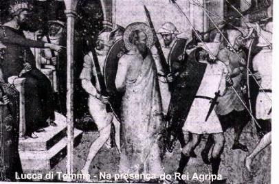
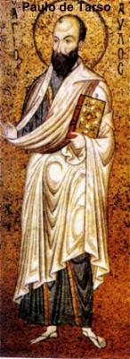
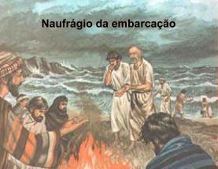
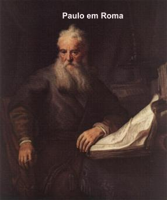
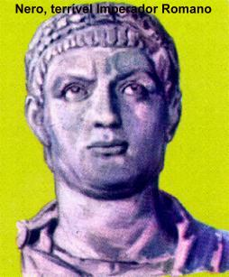
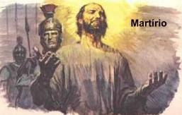
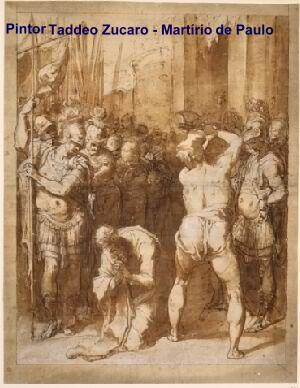
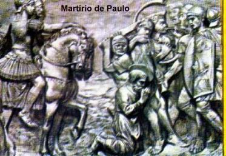
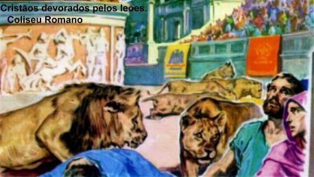
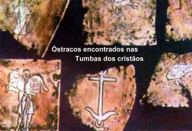

PRISIONEIRO DE FESTO
Alguns dias mais tarde, Agripa rei de Cálcis,
em companhia de Berenice, sua irmã 
Agripa manifestou o desejo de ver Paulo.
No dia seguinte, Pórcio Festo, o rei Agripa e Berenice, se instalaram no grande salão, que também ficou repleto de judeus, e mandaram chamar Paulo. Ele delicadamente pediu permissão para fazer a sua própria defesa. Respondeu Agripa: “Tens permissão de pleitear a tua causa.†(At 26,1)

Neste momento, Festo levantou-se e gritou: “Está louco, Paulo; as muitas letras te fizeram perder a cabeçaâ€. (At 26,24)
Respondeu o Apóstolo: “Não estou louco, excelentíssimo Festo, mas falo palavras de verdade e bom senso.†(At 26,25)
E voltando-se para o rei, perguntou: “Crês nos Profetas, rei Agripa? Eu sei que tu crês.†(At 26,27)
O rei respondeu a Paulo: “Ainda um pouco e por teus raciocínios fazes de mim um cristão!†(At 26,28)
E Paulo disse: “Por pouco ou por muito, queira DEUS fazer que não somente tu, mas todos aqueles que hoje me escutam, tornem-se como eu, exceto essas algemas.†(At 26,29)
E o rei se levantou, assim como o Governador, Berenice e os que estavam sentados com eles. Falavam entre si: “Este homem nada fez que mereça a morte, nem as cadeias.†(At 26,31)
Agripa disse a Festo: “Poder-se-ia soltar este homem, se não houvesse apelado para César.†(At 26,32)
ENVIADO A ROMA

Permaneceram cerca de três meses,
esperando que o tempo melhorasse e que 
Durante os 90 dias em que passaram em Malta, Paulo embora timidamente (porque era um prisioneiro) aproveitou para evangelizar o povo. Num pequeno povoado da ilha, um senhor idoso estava acamado com febre e disenteria. Paulo foi vê-lo, orou e lhe impôs as mãos, ele ficou imediatamente curado. A notícia espalhou! Diante disso, outros doentes da ilha também vieram procurá-lo e foram todos curados.
Por ocasião da partida para Itália do Apóstolo e de todos que ali estavam, em agradecimento, os nativos e habitantes da ilha os cumularam de atenções e os proveram do necessário para a viagem.
CHEGADA A CAPITAL DO IMPÉRIO
Os irmãos cristãos de Roma, informados sobre a chegada de Paulo, foram ao encontro dele no Foro de Ápio e nas Três Tabernas. O Apóstolo vendo os irmãos, deu graças a DEUS e criou mais coragem para enfrentar o cativeiro. Num regime especial de custódia, as autoridades romanas permitiram-lhe residir numa casa particular, que a Comunidade Cristã de Roma alugou. Nela, Paulo se encontrava e conversava normalmente com as pessoas. Só não podia se ausentar da residência. A casa era vigiada diariamente por um soldado.
Depois de dois anos de cativeiro, de 61 a 63, o seu processo terminou sem uma sentença condenatória e ele foi colocado em liberdade, sendo Imperador de Roma, o terrível Nero (54-68).
Assim que foi colocado em liberdade não permaneceu muito tempo em Roma. É possível que tenha viajado para evangelizar a Espanha, porque este era um antigo desejo. (Rm 15,24.28)
NERO INCENDEIA ROMA

Paulo ao deixar a Espanha, percorreu as Igrejas do Oriente. Nomeou Tito, Bispo de Creta (Ti 1,5) . Em Êfeso, nomeou Timóteo, Bispo de Êfeso. (1 Tim 1,3).
Em Nicópolis, passou o inverno, mas sentiu uma vontade irresistível de voltar a Roma. Tito e Lucas, estavam em sua companhia. Por necessidade de atendimento aos núcleos cristãos, Tito foi enviado a Dalmácia. (2 Tim 4,10)
PRISÃO, CONDENAÇÃO E MORTE
Assim sendo, voltou a Roma na primavera do ano 67,
somente acompanhado por Lucas. 
O caso de Paulo devia ser julgado pelo Tribunal Imperial. Nessa época, Nero percorria a Grécia disfarçado em comediante, mas deixou em Roma, como substituto o terrível Élio. No primeiro Interrogatório permitiram ao Apóstolo fazer a sua própria defesa, da acusação de cumplicidade no incêndio de Roma. Mas ninguém o ajudou, senão DEUS. (2 Tim 4,16-17) Contudo, deve ter se saído bem, pois a audiência foi suspensa sem qualquer condenação.
No calabouço, reuniu suas forças restantes e escreveu a sua derradeira carta ao estimado discípulo Timóteo (a Segunda Epístola a Timóteo), a quem cuidava como um filho e o nomeou executor de seu testamento. Tinha esperança de vê-lo ainda uma vez, mas tinha receio de que fosse demasiado tarde. Todavia, na missiva pede que ele venha o mais depressa possível e que trouxesse Marcos em sua companhia. Pede também uma velha capa que deixara em Trôade. A friagem do calabouço estava minando rapidamente a sua saúde.
No outono do ano 67 foi agendada a realização da Segunda Sessão do Tribunal. Paulo não tem ilusões, sabe que esta Sessão terminará com sua entrada no reino dos Céus: “Combati o bom combate, concluí a minha carreira, guardei a fé. De resto, me está reservada a coroa da justiça, que o SENHOR, justo juiz, me dará naquele dia†(2 Tim 4,7-8).
O segundo Interrogatório terminou com a sentença de morte.

De acordo com a opinião mais comum, Paulo sofreu o martírio no mesmo dia e no mesmo ano que o Apóstolo Pedro. Todavia, alguns estudiosos disputam se foi no mesmo dia, mas não duvidam que aconteceu no mesmo ano. A testemunha mais antiga, São Dionísio, o Corinto, afirma que as execuções foram de fato, no mesmo dia, em locais diferentes.
A conversão de Paulo de Tarso é comemorada no dia 25 de Janeiro e sua festa, é celebrada pela Igreja, no dia 29 de Junho, junto com a Festa de São Pedro Apóstolo.


